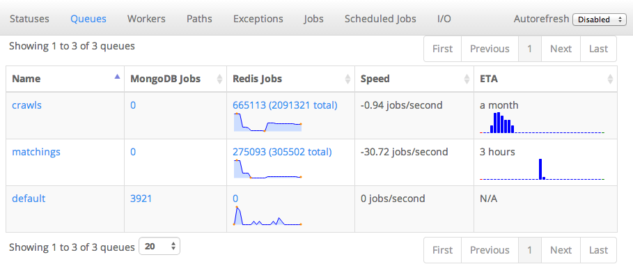
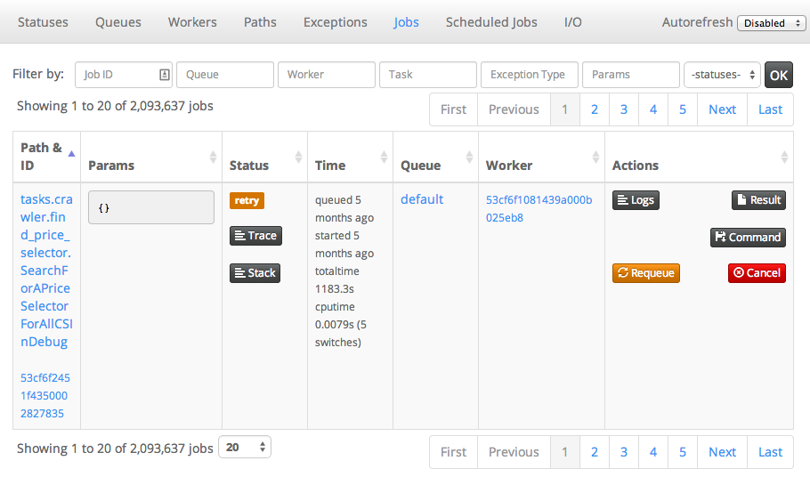

Why ?
MRQ is an opinionated task queue. It aims to be simple and beautiful like RQ while having performance close to Celery
Dashboard
Queues

Jobs

Features
- Simple code
-
We originally switched from Celery to RQ because Celery's code was incredibly complex and obscure. MRQ should be as easy to understand as RQ and even easier to extend.
- Great dashboard
-
Have visibility and control on everything: queued jobs, current jobs, worker status, ...
- Per-job logs
-
Get the log output of each task separately in the dashboard
- Gevent worker
-
IO-bound tasks can be done in parallel in the same UNIX process for maximum throughput
- Supervisord integration
-
CPU-bound tasks can be split across several UNIX processes with a single command-line flag
- Job management
-
You can retry, requeue, cancel jobs from the code or the dashboard.
- Performance
-
Bulk job queueing, easy job profiling
- Easy configuration
-
Every aspect of MRQ is configurable through command-line flags or a configuration file
- Job routing
-
Like Celery, jobs can have default queues, timeout and ttl values.
- Thorough testing
-
Edge-cases like worker interrupts, Redis failures, ... are tested inside a Docker container.
- Scheduler
-
Schedule tasks by interval or by time of the day
- Greenlet tracing
-
See how much time was spent in each greenlet to debug CPU-intensive jobs.
- Memory leak debugger
-
Track down jobs leaking memory and find the leaks with objgraph.
Get Started
Install: pip install mrq
Write a simple fetch task in tasks.py
from mrq.task import Task
import urllib2
class Fetch(Task):
def run(self, params):
f = urllib2.urlopen(params.get("url"))
t = f.read()
f.close()
return len(t)
You can now run it with
mrq-run tasks.Fetch url http://www.google.com
You can also enqueue a few tasks with
mrq-run --async --queue fetches tasks.Fetch url http://www.google.com
mrq-run --async --queue fetches tasks.Fetch url http://www.yahoo.com
mrq-run --async --queue fetches tasks.Fetch url http://www.wordpress.com
Now start the dasbhoard with
mrq-dashboard & and go check your newly created queue and job on
localhost:5555
Instanciate a worker with
mrq-worker --gevent 10 fetches and you can follow it as it executes all the enqueued jobs thanks to the dashboard
{kind=link}
{kind=link}